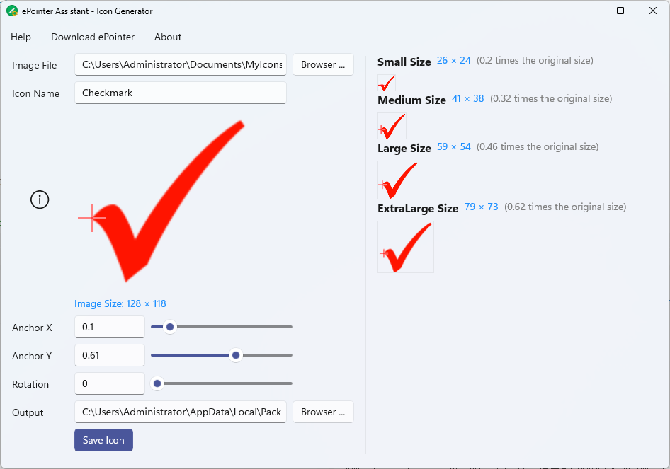

ePointer Assistant is a software auxiliary tool, currently mainly used to configure icon information when customizing icons for ePointer, including setting icon anchor point and rotation angle. For detailed usage instructions, please refer to the Help document of the ePointer Assistant.
Any opinions, suggestions or feedback can be directed to us at: oeapp@outlook.com